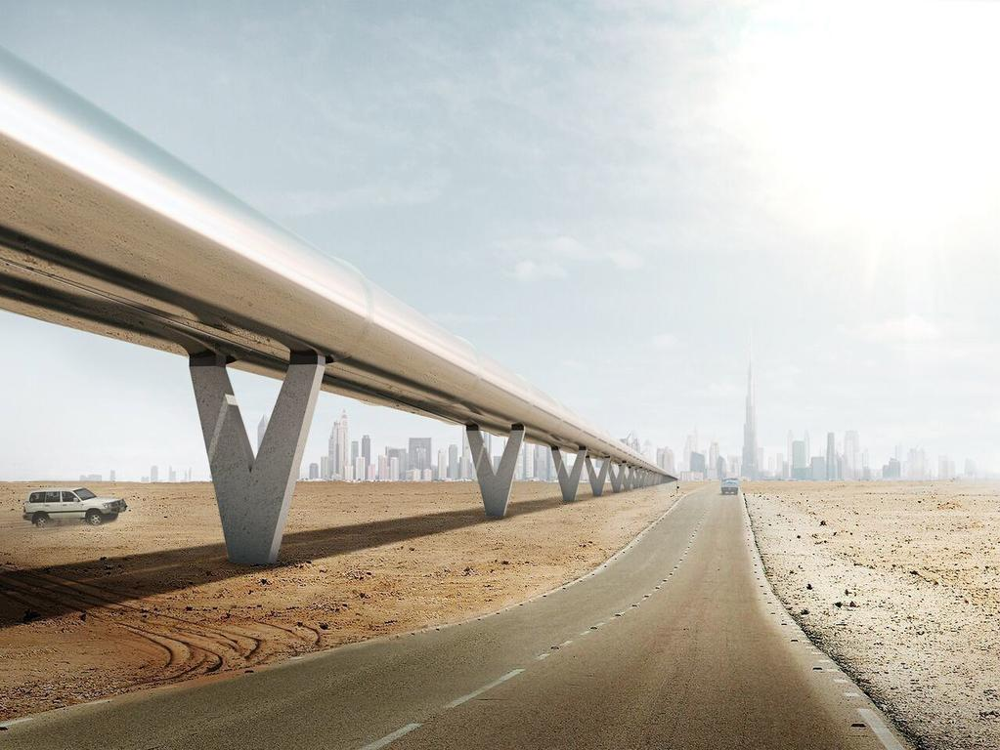
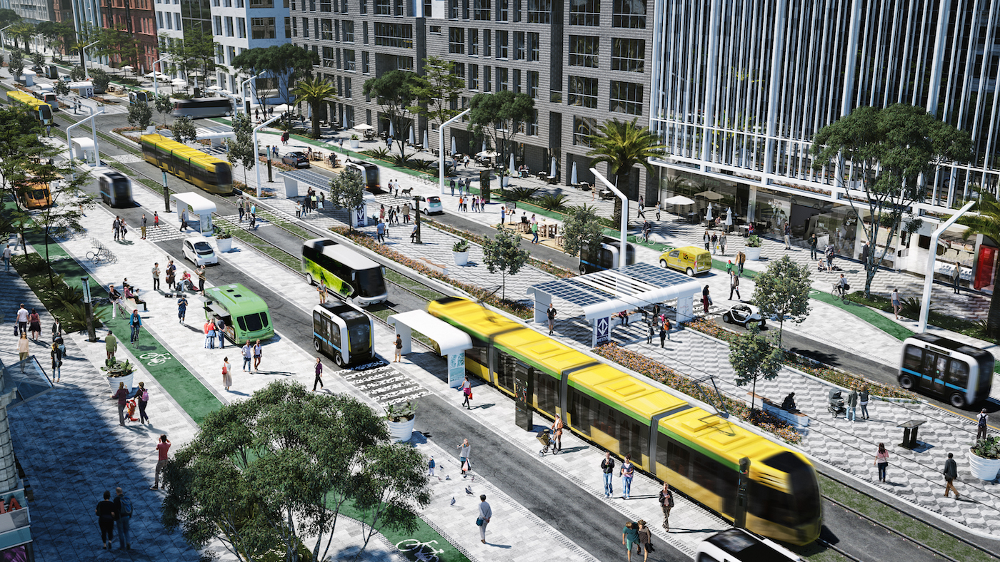
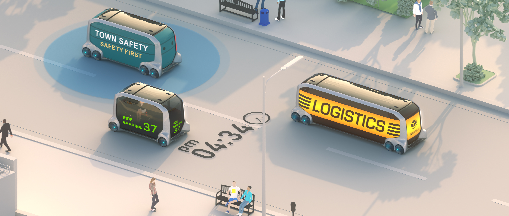
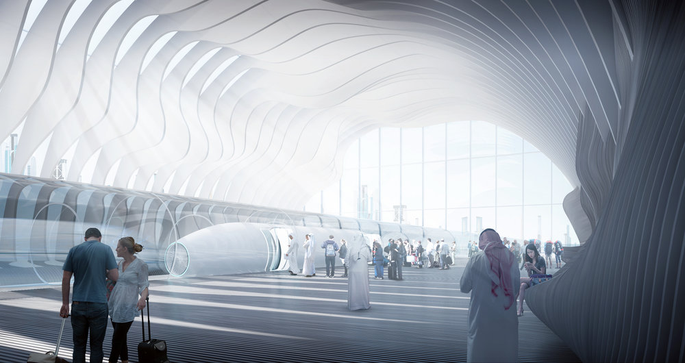
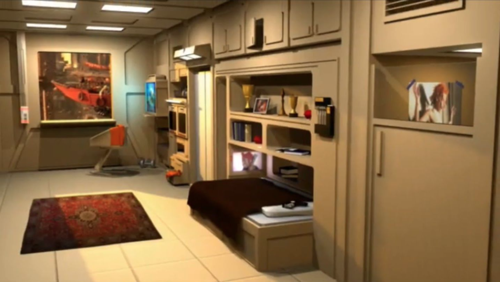
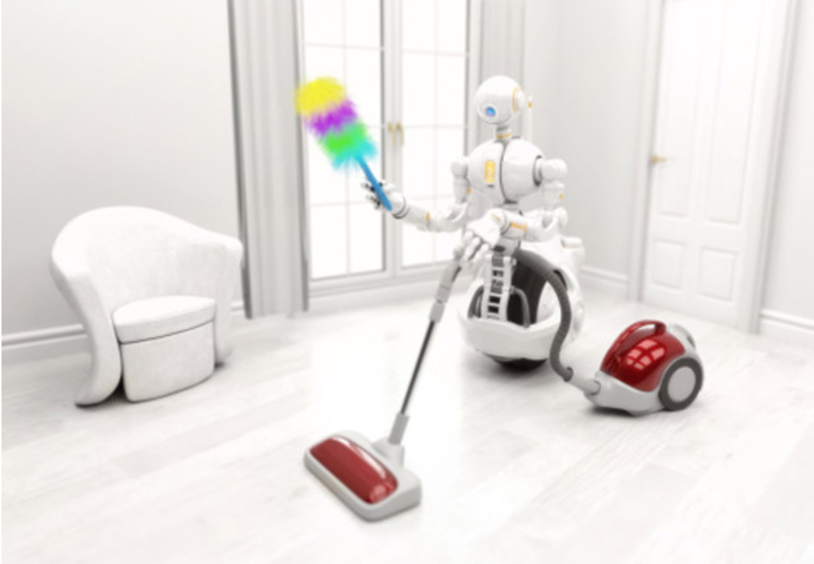
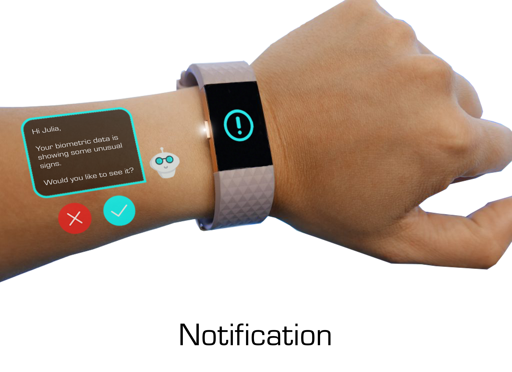
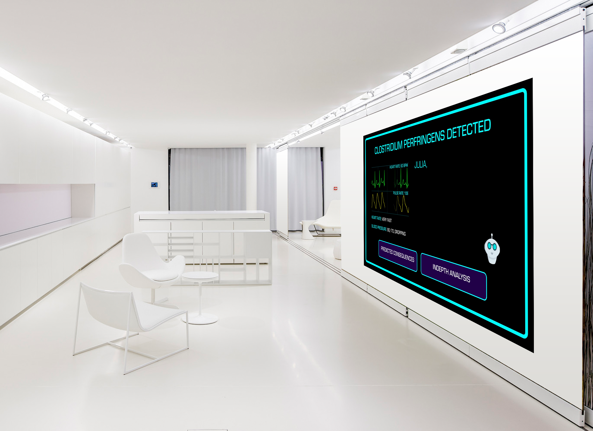
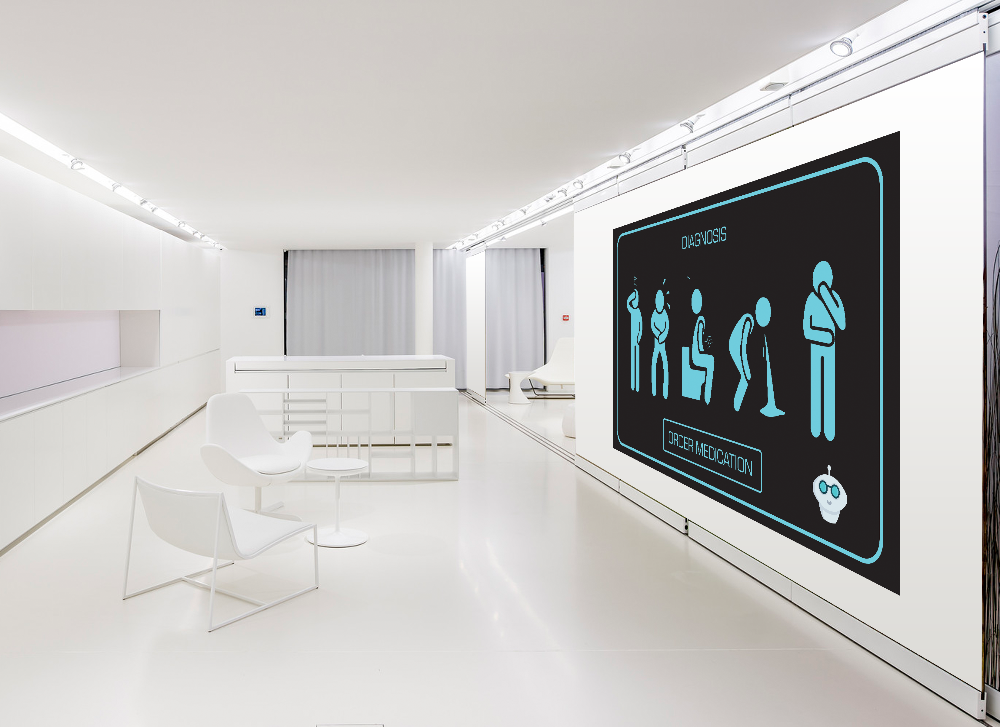
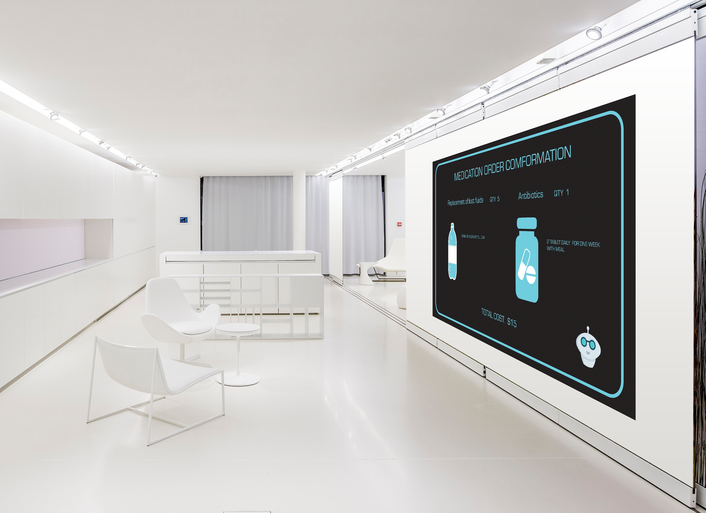

Environment
SPRING SEMASTER 2019
Scenario 1 _ New forms of urban environments due to changing forms of mobility
John's journey through the 1st mega city MEGAPOLIS
John's excited. He has a meeting scheduled for the next day that will bring him to Megapolis for the first time.
Megapolis.. he has heard so much about it - a new MegaCity founded in the late 21st Century reimagining the concept of smart and sustainable cities. The city is highly populated with high raised buildings, flying self-driving cars & ships, and a life made easy by the succor of automated AI robots.
The founding fathers reimagined the city as a mobility platform and took a holistic approach to designing user experiences at scale, all of the above having tremendous influence on the design of city's infrastructure.
AIRPORT -> CENTRAL LAB
John arrives at the International Airport of Megapolis, which is located around 140 miles out of the city center. To get into the city he boards the Hyperloop, a high speed train that travels through a sealed tube and that will get him to the main train station in 11 minutes. On his way, a super glamorous skyline appears in his sight.

CENTRAL LAB -> MEETING
In order to make it to his meeting in time John decides to take an AI guided self-navigating ship that also allows him to capture panoramic views of the whole city and discover Megapolis' most famous neighborhoods. It is the best way to get familiar with the city in the little time he has.
What he witnesses during his flight, blows his mind. The streets seem to be designed around the needs of people and autonomous mobility. People move around by foot, on bikes and other transport-robots John has never seen before, as well as small electrified, autonomous shared buses and cars.
MEETING -> LUNCH
He rides on an electrified self driving bike to experience the view of the city from the ground level. Megapolis looks like a wonderland to John, where anything and everything is possible. It is everything he had envisioned it from whatever he had heard about it.
He witnesses the high raised buildings, breathes in a pollution free environment and feels rejuvenated to see the disposition of things around him. All the buildings are regulated and managed by smart AI bots. John feels a little scared to witness this fast paced life where everything seems so perfect and well regulated.

LUNCH -> CENTRAL LAB
After his lunch John boards a small, fully-automated and shared bus, that brings him back to the Central Lab. On his way he witnesses that in Megapolis Curbsides were replaced by places for commerce and shared mobility, not parking. His bus occupies a narrow lane, as much road space as it needs to move him and his co-passengers efficiently. Not one street in this town seems to be saturated with thousands of single-occupancy vehicles. All the other space is dedicated to other public transit and shared rides, walking and biking.

CENTRAL LAB -> AIRPORT
After arriving at Central Lab, John takes the Hyperloop back to the airport. He spent a wonderful day at Megapolis.

REFERENCES
1. Uber Air
2. Hyperloop
3. Nacto - Autonomous Urbanism
4. Toyota e-Palette
2. Hyperloop
3. Nacto - Autonomous Urbanism
4. Toyota e-Palette
Scenario 2 _ AI Human Collective
AI system becomes a personal assistant of a person and performs all the daily tasks for Julia.
Julia
27 yrs. old
Freelance_Graphic Technologist
Julia is a resident of Megapolis, a smart highly-connected and sustainable megacity, founded in the late 21st Century. Julia lives in a one-bedroom studio cell within the city center. In Megapolis each living-cell is equipped with Fredd-i, a highly personalized, screen-based and artificial living assistant that is designed to support resident's daily lives.
Fredd-i monitors and manages all appliances and systems within the apartment and performs all of Julia's work-related and private daily tasks, as well as taking care of her well-being and health. In her highly connected living cell, equipped with smart devices, Fredd-i follows Julia throughout her apartment ready to interact with her at any time and from any device.
Julia is a resident of Megapolis, a smart highly-connected and sustainable megacity, founded in the late 21st Century. Julia lives in a one-bedroom studio cell within the city center. In Megapolis each living-cell is equipped with Fredd-i, a highly personalized, screen-based and artificial living assistant that is designed to support resident's daily lives.
Fredd-i monitors and manages all appliances and systems within the apartment and performs all of Julia's work-related and private daily tasks, as well as taking care of her well-being and health. In her highly connected living cell, equipped with smart devices, Fredd-i follows Julia throughout her apartment ready to interact with her at any time and from any device.

MORNING ROUTINE
Julia's morning starts with her favourite soothing and relaxing music which Fredd-i plays for her to wake her up.
After freshening up, Julia heads towards the dining area to have breakfast, where Fredd-i has already prepared the breakfast for her.
While she enjoys the half fried eggs, perfectly toasted bread the way she likes it and a Cappuccino, Fredd-i displays her appointments meetings for the day, as well as news and the latest updates from her social media accounts.
After Julia is done with her breakfast, Fredd-i books her transportation, AI self driving ship to the meeting destination.

MISCELLANEOUS WORK
After Julia leaves for her meetings, Fredd-i has a lot of miscellaneous chores to take care of including laundry, watering the plants in the apartment, ordering groceries online and vacuum- cleaning Julia's cell.
Fredd-i requests a laundry and cleaning service through the system. El-i, a housekeeping AI robot, arrives at the apartment
The robot collects all the dirty laundry and vacuum cleans the entire apartment. Fredd-i checks all the usage of grocery and sends a refill request to the online grocery store. Later on, he turns on the watering system and applies the water and nutrition to the plants Julia keeps at home.
Fredd-i also takes care of any clothes or any matching accessories that Julia might need. He orders them online for her.

EVENING ROUTINE
Fredd-i receives a notification as Julia boards a public transport to go home and starts to prepare her dinner.
The moment Julia walks into her cell, Fredd-i welcomes her by starting to play her favorite song and presenting her some updates on the tasks he performed during her absence. Again, Julia finds her dinner ready and set up for her in the dining area of her living-cell.
After dinner, Fredd-i takes care of her dishes and starts to play Julia's favorite TV series called "Game of Clones"
Based on Julia's heart rate and breathing rhythm Fredd-i dims the lights and turns on the heating system untll it reaches the best sleeping temperature for Julia. Once Julia fell asleep, Fredd-i switches off the TV and all the lights and turns himself into Sleep-mode, ready to go back to life anytime Julia's biometric data show a change in their states.
REFERENCES
1. White Christmas_Black Mirror
2. The 5th element
2. The 5th element
Final Prototype (baced on scenario 2)
Scene: Julia has just had her lunch which she ordered from a nearby restaurant and is taking a short nap. Fredd-i detects a virus in her body and sends an immediate warning. Let’s see how Fredd-i guides Julia through the process of eliminating the virus from her body.
Context: Julia is a resident of MEGAPOLIS, a smart highly-connected and sustainable megacity, founded in the late 21st Century. Julia lives in a one-bedroom studio cell within the city center where each living-cell is equipped with Fredd-i, a highly personalized, screen-based and artificial living assistant that is designed to support resident’s daily lives. Fredd-i monitors and manages all appliances and systems within the apartment and performs all of Julia’s work-related and private daily tasks, as well as taking care of her well-being and health through the smart wrist band she wears.
Fredd-i send her a warning notification
Context: Julia is a resident of MEGAPOLIS, a smart highly-connected and sustainable megacity, founded in the late 21st Century. Julia lives in a one-bedroom studio cell within the city center where each living-cell is equipped with Fredd-i, a highly personalized, screen-based and artificial living assistant that is designed to support resident’s daily lives. Fredd-i monitors and manages all appliances and systems within the apartment and performs all of Julia’s work-related and private daily tasks, as well as taking care of her well-being and health through the smart wrist band she wears.
Fredd-i send her a warning notification

2. Julia accepts the warning notification to learn more about the virus in her body.

3. Julia choses to learn more about the ‘predicted consequences’

4. Julia orders her Medication
